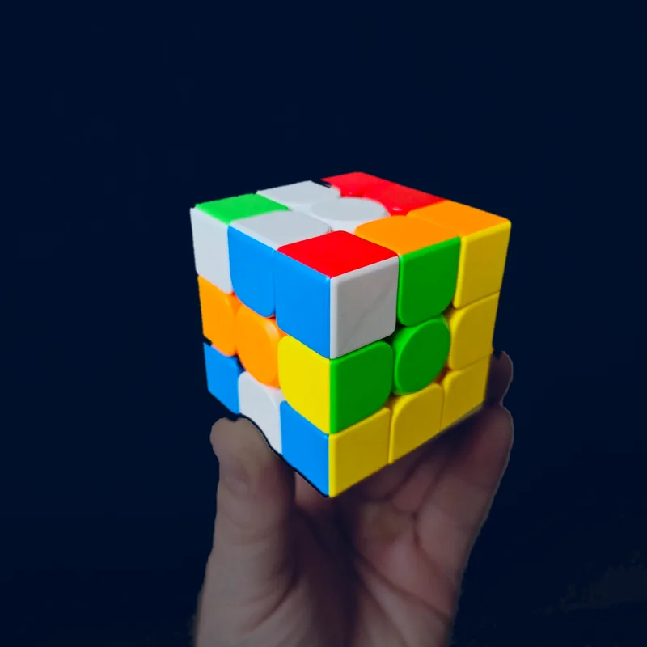
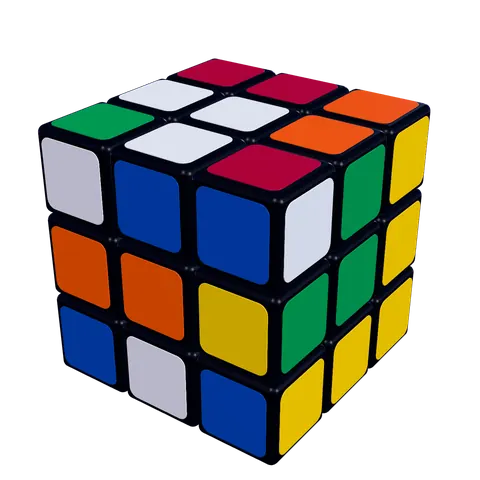
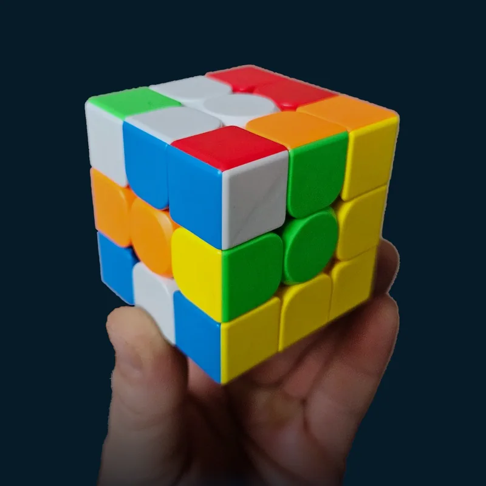

Solve in the app or connect a smart cube.
Compete in weekly leagues and Today's cube, or duel a friend.
Try the app early on Android or iPhone. It's free.

Your own cube, on the screen.
Show the camera each side of your real cube. Kubelo builds the same cube on the screen, and Help shows you how to solve it, one move at a time.
Stuck? Press Help.
Help shows the next move and tells you if you turned the wrong side. Press Undo and keep going.
Solve your first cube.
An on-screen guide shows you each step, and you make every move yourself.
0.00
Time your solves.
Use the timer with a real cube and track your averages in Records. Send a friend a cube as a link and see who's faster. Connect a GAN smart cube and the cube on screen follows every turn.
- Sea
- Clouds
- Sky
- Orbit
- Stars
Weekly leagues.
Play a round of five, and your average sets your league, from Sea to Stars. Every posted solve is replayed and checked. Every day, Today's cube gives everyone the same scramble.
